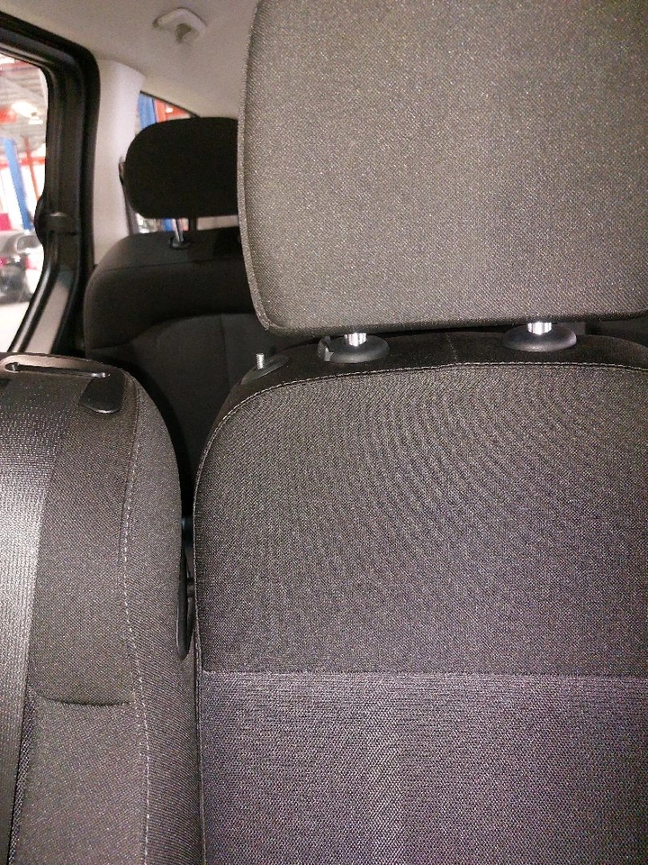

فحص السيارة الشامل
الماكينة
الجيربوكس
نظام الكهرباء
السوائل
أسفل السيارة
نظام الفرامل
الدفرنس / الكورونا
القسم الداخلي
اضافات
فحص الهيكل الخارجي
الماكينة
الصوفة الأمامية
حالة الماكينة
الصوفة الخلفية
تصفية ماكينة
كرسي الماكينة
وجه كرتير الماكينة
وجه غطاء البلوف
قاعدة فلتر الزيت
وجه الثلاجة
رديتر الماء
وجه صدر الماكينة أمام / خلفي
طرمبة الماء
السيور
صفاية البنزين
فلتر الهواء
كارتير الماكينة
ثلاجة الماكينة
ليات ماء الرديتر
البكارات
غطاء الماكينة
قربة الرديتر
طرمبة الدركسيون
قربة المساحات
غطاء الرديتر
غطاء قربة الرديتر
أثر فك في الماكينة
الجيربوكس
وجه طرمبة الزيت
الصوفة الامامية
الصوفة الخلفية
كرسي الجير بوكس
وجه كرتير الجير
صوف عصا الجير
ماسورة مبرد الجير
حالة الجير
كارتير الجير
مبرد الجير
اثر فك في الجير
نظام الكهرباء
البطارية
الدينمو
السلف
الانوار
كمبروسر مكيف
السنتر لوك
المساحات
شاشة المكيف
اعطال الكمبيوتر
ثلاجة مكيف
رديتر مكيف
فلتر مكيف
ليات الفريون
المكيف الخلفي
علبة الفيوزات
السوائل
زيت الماكينة
زيت الجير
زيت الفرامل
ماء الرديتر
ماء المساحات
زيت دركسيون
أسفل السيارة
ذراع شاص
ليات الدركسيون
الدودة
عامود الدركسيون
المساعدات الامامية
المساعدات الخلفية
جلد المقص العلوي
جلد المقص السفلي
اليايات
جلد عمود توازن
عمود توزان
كمر
ذراع داخلي
ذراع خارجي
الركبة اليمنى
الركبة اليسرى
كراسي المساعدات
مسمار عامود التوازن امامي
مسمار عامود التوازن خلفي
صدأ
شكمان
نظام الفرامل
علبة الفرامل الرئيسية
باكم الفرامل
ليات فرامل
فرامل امامية
فرامل خلفية
هوب امامي
هوب خلفي
فلنجات امامي يمين
فلنجات امامي يسار
فلنجات خلفي يمين
فلنجات خلفي يسار
سلندر امامي يمين
سلندر امامي يسار
سلندر خلفي يمين
سلندر خلفي يسار
سلك فرامل اليد جلنط
الدفرنس / الكورونا
لعكوس الامامية
العكوس الدفرنس
دفرنس
صوفة عكس امامي
صوفة عكس حلفي
عمود كردان
دبل
فلنجة امامي
فلنجة خلفي
القسم الداخلي
تحكم النوافذ
زر تامين الابواب
ديكورات
تحكم المريات
الطبلوه
تحكم الدركسيون
الشاشة
عجلة القيادة
السماعات
السقف
فتحات المكيف
تحكم المكيف
شماسة يمين
شماسة يسار
المقعد الامامي يسار
المقعد الامامي يمين
اعرض الصورة
المرائم الخلفية
فرش السقف
ديكور الباب الامامي يمين
ديكور الباب الامامي يسار
ديكور الباب الخلفي يمين
ديكور الباب الخلفي يسار
زر الزجاج الامامي يمين
زر زجاج الامامي يسار
زر الزجاج الخلفي يسار
زر الزجاج الخلفي يمين
عصا الجير
حامل الاكواب
زر فتح الشنطه
يد فتح الكبوت
اضافات
تكاية
صفط المرايات
حقيبة الأدوات
رافعة
مثلث السلامة
كاميرا
مثبت السرعة
حساسات رجوع الى الخلف
حساسات الصدام الامامية
كفرات
فحص الهيكل الخارجي
الجهة اليسرى
جنط
باب امامي
رفرف امامي
باب خلفي
رفرف خلفي
سمكة
قائم
زجاج امامي
زجاج خلفي
مراية جانبية
بطانة
جنب كامل
الربلات
ازياج
كفر
الجهة اليمنى
جنط
باب امامي
رفرف امامي
باب خلفي
رفرف خلفي
سمكة
قائم
زجاج امامي
زجاج خلفي
مراية جانبية
بطانة
جنب كامل
الربلات
ازياج
كفر
الجهة العلوية
تنده السقف
جنب كامل
ازياج
الجهة الخلفية
شنطة
زجاج خلفي
صدام خلفي
جنب كامل
شاص
قاعدة شاص
وجهية
جسر
ستوب يسار
ستوب يمين
عاكس يمين
عاكس يسار
الجهة الامامية
كبوت
زجاج امامي
صدام امامي
جنب كامل
شاص
قاعدة شاص
وجهية
جسر
شمعة يمين
شمعة يسار
كشاف يمين
كشاف يسار
شبك
تاريخ الفحص:22 محرم 1446 | 2024/07/29
إخلاء مسؤولية
المقعد الامامي يمين
خدش, مكسور
